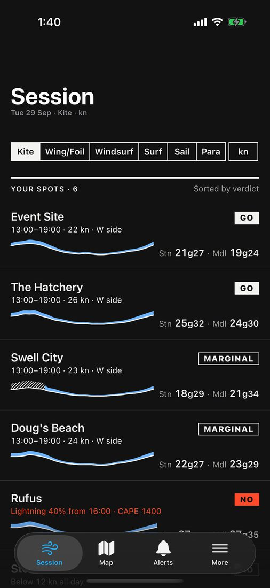
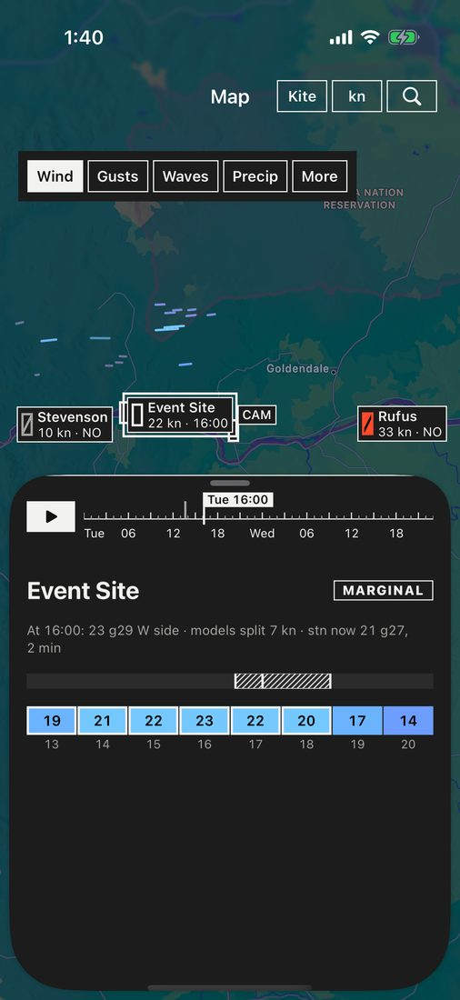
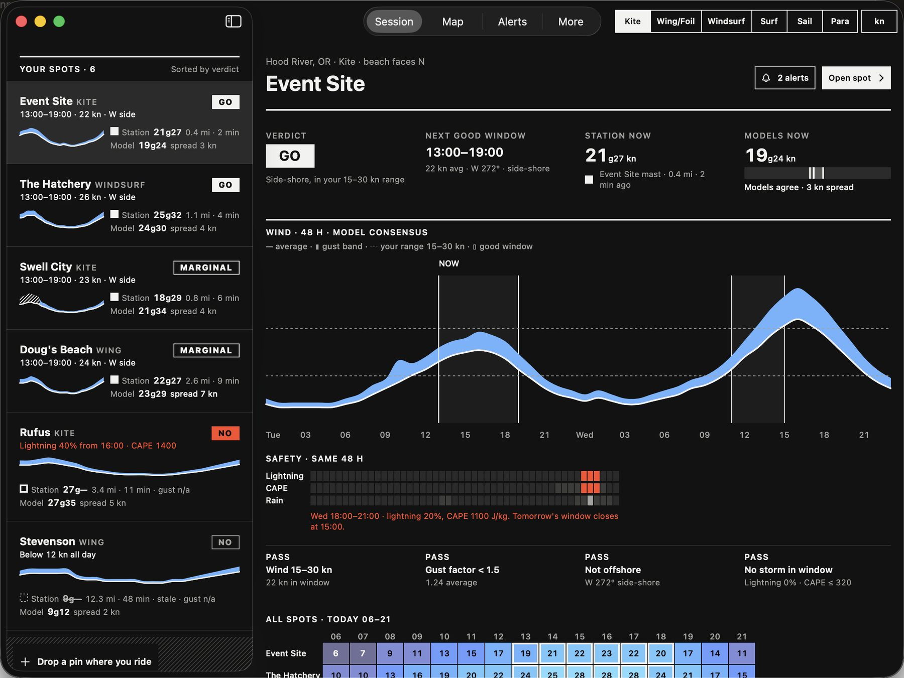
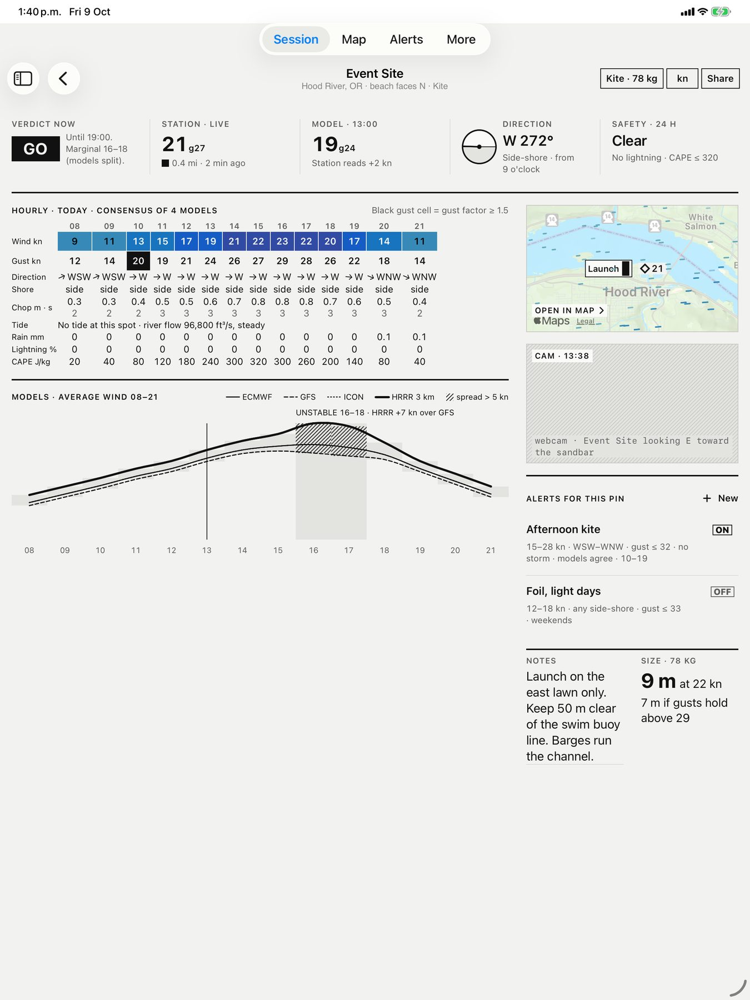
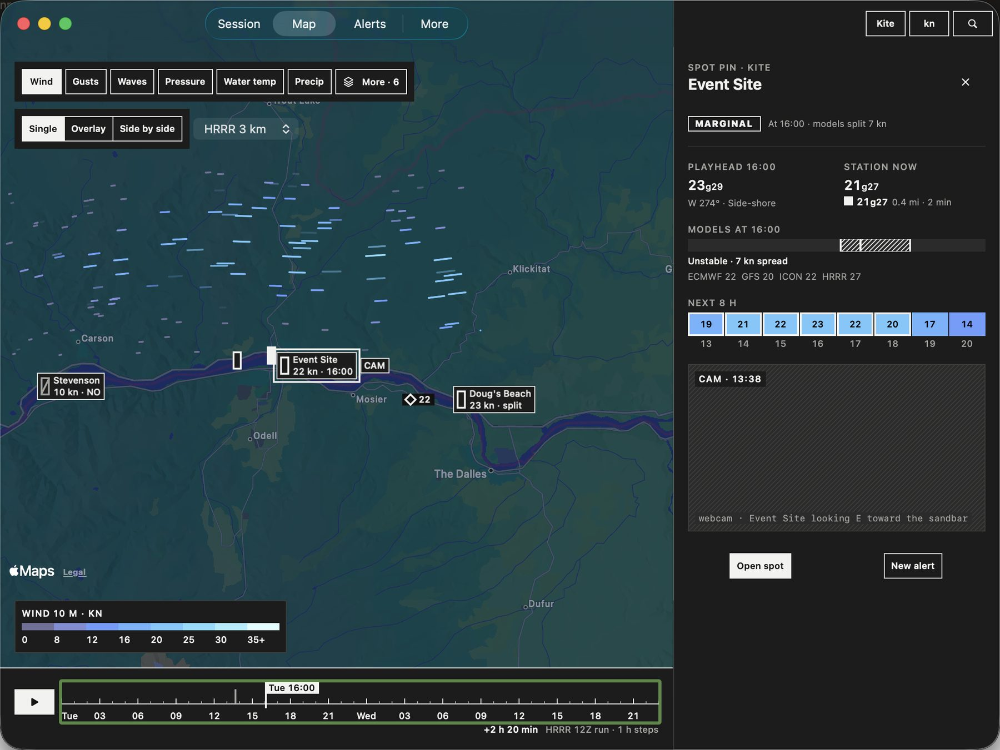
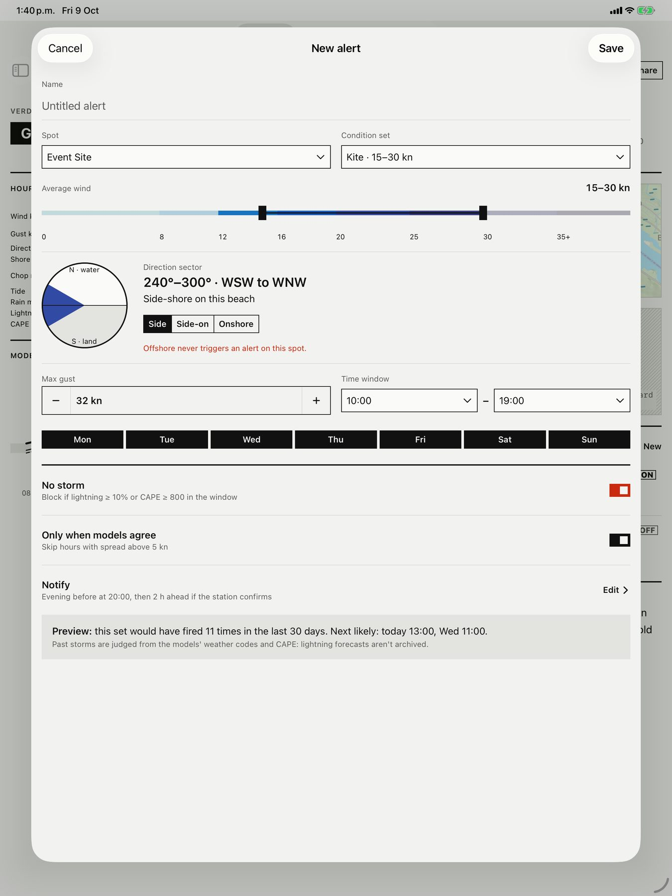

iPadOS 26 · iOS 26 · macOS 26
Sideshore
Wind forecast & live stations
A quiet wind desk: spots, models that argue in the open, live stations, and a go/no that respects gusts, shore angle and storms.
Free · No account · No ads


All spots · Today 06–21
Event Site GO
Hood River, OR · Kite · beach faces N · Gorge demo, Tue 29 Sep
Session · Verdict
Why the verdict is what it is.
The rules that decided it, the next 48 hours and every spot's day, side by side.

Spot · Event Site
Every model, with its spread drawn.
The live station against the forecast, with the hourly table, webcam and notes.

Map · Inspector
The wind field, hour by hour.
Scrub or play 48 hours, then tap a spot to inspect it without leaving the map.

Alerts · Compose
Test an alert before you save it.
How often it would have fired in 30 days, then a heads-up the evening before.

A go/no you can read
The rules run in order. The first hard fail wins.
Offshore, a storm in the window, or wind over your maximum.Storm: lightning chance 10% or more, or CAPE 800 J/kg or more.
Too light for your range.
Gusts at 1.5× the mean wind or more, or models more than 5 kn apart.
In range, not offshore, no storm.
No score, no hidden weighting. A missing value shows a dash and why, never a guess.
For every wind sport
Each sport brings its own range.
- Kite
- Wing/Foil
- Windsurf
- Surf
- Sail
- Para
Or choose “Just show me the wind”: wind, gusts and storm warnings, with no verdicts.
Private by design
No account, no ads, no tracking, no server.
Your spots, profiles, alerts and notes stay on your device. Weather requests carry a spot's coordinates, never your location.
iPhone · iPad · Mac
Read the wind before you rig.
Free · No account · No ads · One purchase across iPhone, iPad and Mac